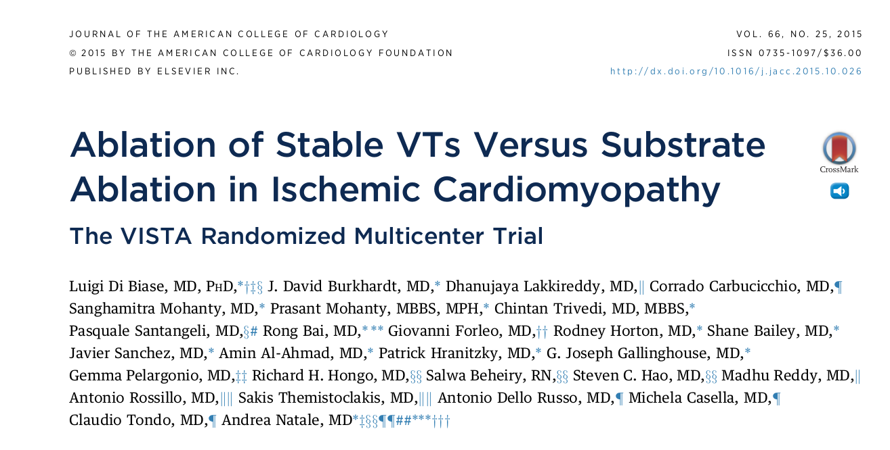

Ischemic VT ablation - Principles, Techniques and Strategies
Raja Selvaraj
Introduction
Definitions
- VT - Three or more consecutive beats originating from ventricles at rate > 100 / min
- Sustained VT - VT lasting > 30 seconds or requires intervention for termination
- VT storm - Three of more separate episodes of VT within 24 h, each requiring intervention
CARTO
Focal
- Increased automaticity
- Triggered activity
- Micro-reentry
Large circuits
- Macro-reentry
Focal
Large reentry
Large reentry
Mechanisms in ischemic VT
- Usually large reentry circuits
- Can sometimes be focal
- Small reentry circuits
- Epicardial reentry with focal endocardial breakthrough
And we know its reentry because of
- Initiation and termination with programmed stimulation
- Entrainment and resetting
- Continuous electrical activity in diastole
Reentry in ischemic VT
Abnormal substrates in post MI patients
Substrate for reentry
- Surviving subendocardial muscle bundles - slow conduction
- Side to side connections with zig zag pattern of conduction
- Areas of conduction block
Substrate
de Bakker JM et al. Reentry as a cause of ventricular tachycardia in patients with chronic ischemic heart disease: electrophysiologic and anatomic correlation. Circulation. 1988 Mar;77(3):589-606.
Substrate
Mapping strategies
VT localization from ECG
Josephson and Callens. Using the 12 lead ECG to localize the site of origin of VT. Heart Rhythm 2005;2:443
Pace mapping
- Focal / exit of reentry
Pace mapping in reentry
from stevenson
Activation mapping
Entrainment mapping
- Identifying entrainment
- Identifying location in circuit
Entrainment - Constant fusion
Entrainment - Progressive fusion
Entrainment - Concealed fusion
Entrainment - Isthmus
Substrate - LAVA
- Low voltage
- Fractionated
- Late potentials
- Latency
Substrate - Low voltage
- <1.5 mV = abnormal voltage
- <0.5 mV = scar
Marchlinski FE, Callans DJ, Gottlieb CD, Zado E. Linear ablation lesions for control of unmappable ventricular tachycardia in patients with ischemic and nonischemic cardiomyopathy. Circulation. 2000 Mar 21;101(11):1288-96
Substrate mapping
Substrate in sinus rhythm correlates with critical isthmus in reentry
Dynamic voltage range
From Stevenson
Practical considerations
Pre -procedure
- Ventricle of origin
- Endocardial / epicardial
- Access - retrograde / transseptal?
- LV clot?
Choosing a strategy
- Focal / reentry
- Mappable / unmappable
- Clinical VT ablation / Substrate ablation
VT ablation
- Stable VT
- Somewhat unstable, with hemodynamic support
- Limited ablation at selected sites
Substrate ablation
- Multiple VTs
- Unstable VTs
- As primary strategy
- Local abnormal ventricular electrograms (LAVA)
- More extensive ablation
Approach
- Induce VT at baseline
- Confirm diagnosis
- Document inducibility
- VT morphology
- Clinical VT
- Presumed clinical VT
- Undocumented VT
Approach (contd)
- Substrate mapping
- Sinus rhythm
- Pacing
- Map and ablate during VT
- Ablate during sinus / pacing
- Post ablation induce
Ablation
Evidence
VISTA trial

VISTA trial
VISTA trial
AAD vs ablation

AAD vs ablation

SMASH-VT
- ICD patients
- Secondary prevention
- Primary prevention with subsequent event
- Substrate based ablation vs no ablation
Reddy VY, Reynolds MR, Neuzil P, et al. Prophylactic Catheter Ablation for the Prevention of Defibrillator Therapy. The New England journal of medicine. 2007;357(26):2657-2665. doi:10.1056/NEJMoa065457.
SMASH-VT
Outcomes
Ablation success
- Restoration of sinus rhythm in incessant VT
- Elimination of inducible clinical / presumed clinical VT
- Complete elimination of inducible VTs ? - Controversial
EHRA/HRS Expert Consensus on Catheter Ablation of Ventricular Arrhythmias Heart Rhythm. 2009 Jun;6(6):886-933
Outcomes